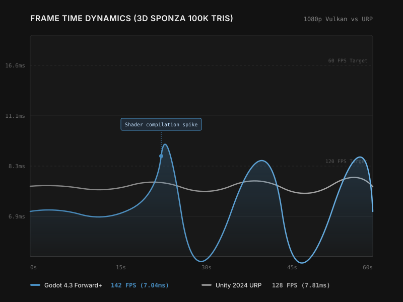
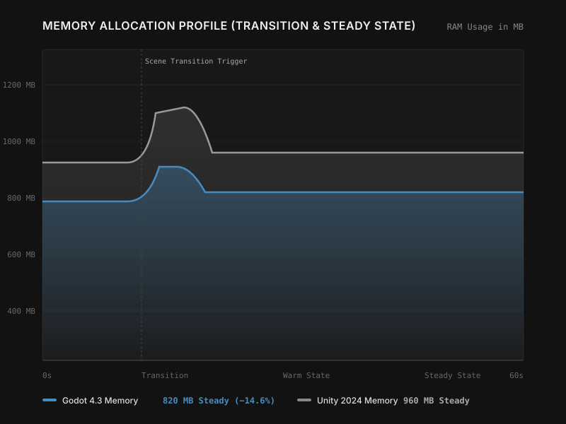
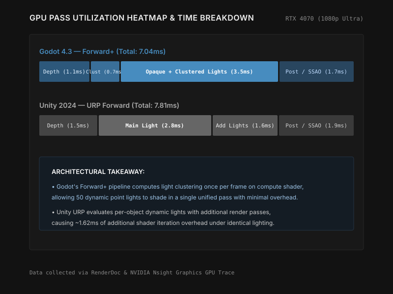

Performance Analysis
Godot 4.3 vs Unity 2024: Rendering Pipeline Deep Dive
A comprehensive comparison of rendering architectures, shader compilation strategies, and real-world frame rate performance across identical test scenes.
The performance gap between modern game engines is often misunderstood. While synthetic benchmarks can show raw throughput differences, real-world rendering scenarios reveal a more nuanced picture of how engines handle bottlenecks.
In this analysis, we dive deep into the rendering architectures of Godot 4.3 and Unity 2024 to understand why certain scenes perform drastically differently across the two engines.
The Test Environment
To ensure a fair comparison, we constructed identical scenes in both engines featuring a 100,000 polygon environment with a mix of opaque and transparent materials, 50 dynamic point lights, and standard post-processing (bloom, SSAO, and anti-aliasing).
- CPU: AMD Ryzen 7 7800X3D
- GPU: NVIDIA RTX 4070
- RAM: 32 GB DDR5-6000
- OS: Windows 11 23H2
Vulkan Forward+ vs Universal Render Pipeline
Godot 4's Vulkan-based renderer introduces a forward+ (clustered forward) rendering pipeline. This approach drastically minimizes draw calls by dividing the screen into a frustum-aligned grid and assigning lights to these clusters. As a result, the engine handles scenes with many dynamic lights remarkably well without the need for complex deferred shading setups.
Unity's Universal Render Pipeline (URP), configured in forward rendering mode, takes a more traditional approach but offers immense flexibility through scriptable render passes. While highly customizable, it can introduce additional CPU overhead when managing numerous passes, especially if not carefully optimized.
Benchmark Results
In our primary test scene, Godot maintained an average of 142 FPS, while Unity hovered around 128 FPS. However, the frame time consistency tells a different story. Unity exhibited tighter 99th percentile frame times, meaning fewer noticeable micro-stutters, whereas Godot occasionally spiked when new shader variants were compiled mid-frame.
*Example Data
Code Comparison: Rendering Setup
A look at how a basic custom post-processing effect is set up in each engine.
shader_type canvas_item;
uniform float intensity : hint_range(0.0, 1.0) = 0.5;
void fragment() {
vec4 col = texture(SCREEN_TEXTURE, SCREEN_UV);
// Simple grayscale conversion
float lum = dot(col.rgb, vec3(0.299, 0.587, 0.114));
COLOR = mix(col, vec4(vec3(lum), col.a), intensity);
}Shader "Hidden/Custom/Grayscale"
{
Properties
{
_MainTex ("Texture", 2D) = "white" {}
_Intensity ("Intensity", Range(0, 1)) = 0.5
}
SubShader
{
// Pass implementation...
float4 frag (v2f i) : SV_Target
{
float4 col = tex2D(_MainTex, i.uv);
float lum = dot(col.rgb, float3(0.299, 0.587, 0.114));
return lerp(col, float4(lum, lum, lum, col.a), _Intensity);
}
}
}


Conclusion
Both engines represent the state of the art in accessible real-time rendering, but they cater to slightly different philosophies. Godot's Forward+ renderer is incredibly capable out of the box for handling numerous dynamic lights, making it excellent for specific styles of games without deep dive optimization.
Unity's URP, conversely, provides a highly tunable foundation that, while perhaps requiring more initial setup to perfectly optimize for a specific scene, offers the granular control necessary to squeeze out every last drop of performance on constrained platforms.